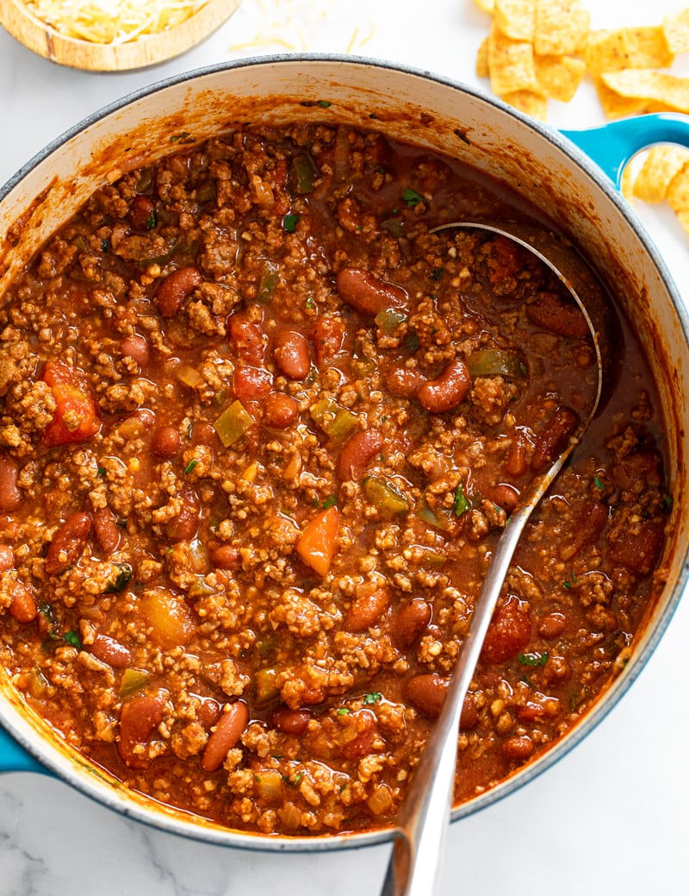

Brett's Famous Chili

Description
We've been making chili this way ever since Brett cooked it up
for us years ago. Simple, hearty, and delicious, this dish is perfect
year round, but especially in the cold winter months.
Ingredients
- 3 cans of beans: 1 dark red kidney beans, 1 pinto, 1 black
- 1 can fire roasted tomatoes with green chiles
- 1 yellow onion, diced
- 4 cloves garlic, crushed
- Ketchup
- Mustard
- 1 tbsp Soy Sauce
- 1 tbsp Hot Sauce
- 1 lb ground beef or turkey (optional)
Steps
- Combine all ingredients in slow cooker. For ketchup and mustard, use a
1:2 ratio of mustard:ketchup to taste. If adding ground meat, brown in a pan
before adding, but do not cook all the way through.
- Set slow cooker to HIGH and run for 2 hours, or set to LOW and run for 4+ hours